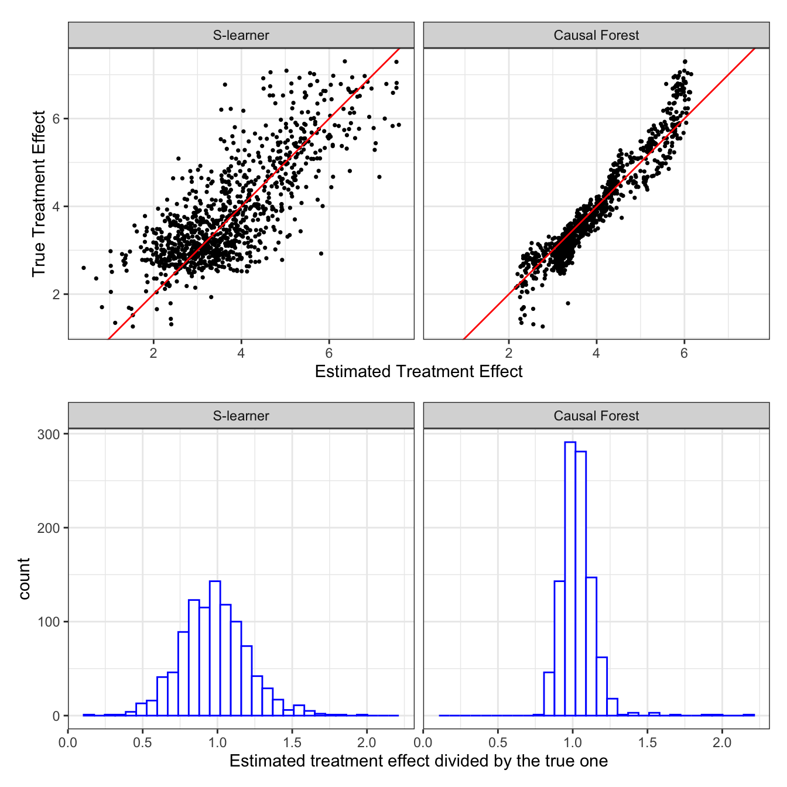
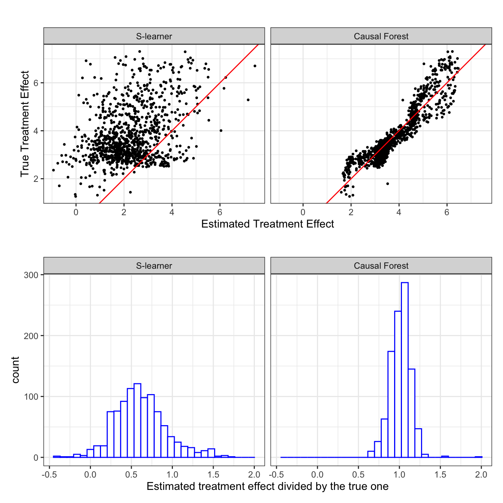

library(data.table)
library(DoubleML)
library(tidyverse)
library(mlr3verse)
library(patchwork)
library(parallel)
library(ranger)10 Why can’t we just do this?
Suppose you are interested in estimating the effect of a treatment (\(T\)) in the model represented by the following equation:
\[ \begin{aligned} y = f(T, X) + \mu \\ \end{aligned} \]
A very natural approach to estimate treatment effect seems to simply train ML models (e.g., random forest) to estimate \(f(T, X)\) by regressing \(y\) on \(T\) and \(X\) (treating \(T\) as just one of the covariates along with \(X\)), and then derive the effect of \(T\) bsed on the trained model. Let \(\hat{f}(T, X)\) denote the trained model using any ML method. If \(T\) is binary, then we can simply estimate its treatment effect conditional on \(X\) by the following:
\[ \begin{aligned} \theta(X) = \hat{f}(T=1, X) - \hat{f}(T=0, X) \end{aligned} \]
where \(\theta(X)\) denotes the impact of \(T\) conditional on \(X\). If \(T\) is continuous, then the impact of changing the vale of \(T\) from \(a\) to \(b\) is simply
\[ \begin{aligned} \theta(X)_{a \rightarrow b} = \hat{f}(T=b, X) - \hat{f}(T=a, X) \end{aligned} \]
This approach actually has a name and it is called S-leaner. Indeed, lots of empirical studies in many scientific fields (not so much in economics) have used (and have been using) this approach for causal inference. So, can’t we just use this approach for every single causal inference task? The idea of S-learner seems solid.
Many of these studies actually are not aware of the distinctions between prediction and causal inference.
Unfortunately, S-leaner is inappropriate in many circumstances. Let’s see the performance of S-leaner using simple simulations. As a competitor, we also run causal forest (CF), one of the CML methods we will learn later (Chapter 13). You do not need to understand how CF works here. You just need to know that it is a method that can estimate heterogeneous treatment effects at this point.
As an example, consider the following data generating process:
\[ \begin{aligned} y = \theta(X)\cdot T + g(X) + \mu \end{aligned} \]
, where
\[ \begin{aligned} \theta(X) & = 2 + x_1^2 + \sqrt{x_1+x_2 + 1} - max(x_1 \times x_3, 1) \\ g(X) & = \alpha \cdot [x_1^2 + log(x_2+1) + 2\cdot x_1*x_2] \end{aligned} \]
In this example, \(\alpha = 2\). Finally, \(\mu\) is independent of all the variables. So, the treatment and \(X\) are all unconfounded.
Packages to load for replication
Let’s first generate a dataset according to the data generating process.
set.seed(13934)
N <- 1000 # number of observations
data <-
data.table(
x1 = 2 * runif(N),
x2 = 2 * runif(N),
x3 = rnorm(N, mean = 1, sd = 1),
mu = rnorm(N),
T = runif(N) > 0.5
) %>%
#=== theta(X) ===#
.[, theta_x := 2 + x1^2 + sqrt(x1 + x2 + 2) - pmax(x1 * x3, 1)] %>%
#=== g(X) ===#
.[, g_x := x1^2 + log(x2 + 1) + 2 * x1 * x2] %>%
.[, y := theta_x * T + 2 * g_x + mu]
# data[, .(theta_x, g_x)] %>% corWe implement S-learner and then causal forest.
#--------------------------
# S-learner with RF
#--------------------------
rf_trained <-
ranger(
y ~ T + x1 + x2 + x3,
data = data
)
#=== calculate treatment effect ===#
te_data <-
copy(data) %>%
.[, T := FALSE] %>%
.[, y_hat_T0 := predict(rf_trained, data = .)$predictions] %>%
.[, T := TRUE] %>%
.[, y_hat_T1 := predict(rf_trained, data = .)$predictions] %>%
.[, theta_hat_s := y_hat_T1 - y_hat_T0]
#--------------------------
# Causal forest
#--------------------------
cf_trained <-
grf::causal_forest(
X = data[, .(x1, x2, x3)],
Y = data[, y],
W = data[, T]
)
#=== predict treatment effect ===#
te_data <-
te_data %>%
.[, theta_hat_cf := predict(cf_trained)$predictions]Figure 10.1 presents
- top panel: the scatter plot of true (y-axis) and estimated (x-axis) treatment effects at the observation level by S-leaner (left panel) and causal forest (right panel)
- bottom panel: histogram of the ratio of estimated treatment effects to true treatment effects by S-leaner (left panel) and causal forest (right panel)
Code
#--------------------------
# Performance visualization
#--------------------------
plot_data <-
te_data[, .(theta_x, theta_hat_cf, theta_hat_s)] %>%
melt(id = "theta_x") %>%
.[, variable := fcase(
variable == "theta_hat_cf", "Causal Forest",
variable == "theta_hat_s", "S-learner"
)] %>%
.[, variable := factor(variable, levels = c("S-learner", "Causal Forest"))]
g_sp <-
ggplot(data = plot_data) +
geom_point(aes(y = theta_x, x = value), size = 0.6) +
geom_abline(slope = 1, color = "red") +
facet_grid(. ~ variable) +
xlab("Estimated Treatment Effect") +
ylab("True Treatment Effect") +
theme_bw() +
coord_equal()
g_hist <-
ggplot(data = plot_data) +
geom_histogram(
aes(x = value/theta_x),
fill = "white", color = "blue"
) +
facet_grid(. ~ variable) +
xlab("Estimated treatment effect divided by the true one") +
theme_bw()
g_sp / g_hist
As you can see, S-learner is okay. It looks like the estimated treatment effects are unbiased (of course, we cannot really tell since we just run a single simulation). So, is CF. However, the biggest difference between the two is the accuracy of treatment effect estimation. CF is clearly much more efficient than S-learner in this particular case.
Now, let’s change the data generating process a bit. Specifically, we will use \(\alpha = 10\) instead of \(\alpha = 2\) so that \(g(X) = \textcolor{red}{10} [x_1^2 + log(x_2+1) + 2\cdot x_1 x_2]\). This means that the nuisance function \(g(X)\) has a much larger share of the variation in \(y\) compared to the previous case. The simulation results for this data generating process are presented in Figure 10.2.
\(g(X)\) is nuisance in the sense that we do not care about estimating \(g(X)\) itself. Rather, we just want to control for it.
Code
#=== update y using 5 as the multiplier of g(X) ===#
data[, y := theta_x * T + 10 * g_x + mu]
#--------------------------
# S-learner
#--------------------------
rf_trained <-
ranger(
y ~ T + x1 + x2 + x3,
data = data
)
te_data <-
copy(data) %>%
.[, T := FALSE] %>%
.[, y_hat_T0 := predict(rf_trained, data = .)$predictions] %>%
.[, T := TRUE] %>%
.[, y_hat_T1 := predict(rf_trained, data = .)$predictions] %>%
.[, theta_hat_s := y_hat_T1 - y_hat_T0]
# rf_trained <-
# regression_forest(
# X = data[, .(T, x1, x2, x3)] %>% as.matrix(),
# Y = data$y,
# tune.parameters = "all",
# tune.num.trees = 500
# )
# te_data_s_wo <-
# copy(data) %>%
# .[, T := FALSE] %>%
# .[, y_hat_T0 :=
# predict(
# rf_trained,
# newdata = .[, .(T, x1, x2, x3)] %>% as.matrix()
# )$predictions
# ] %>%
# .[, T := TRUE] %>%
# .[, y_hat_T1 :=
# predict(
# rf_trained,
# newdata = .[, .(T, x1, x2, x3)] %>% as.matrix()
# )$predictions
# ] %>%
# .[, theta_hat := y_hat_T1 - y_hat_T0] %>%
# .[, learner := "S without interactions"] %>%
# .[, .(learner, theta_x, theta_hat)]
#--------------------------
# Causal forest
#--------------------------
cf_trained <-
grf::causal_forest(
X = data[, .(x1, x2, x3)],
Y = data[, y],
W = data[, T]
)
te_data <-
te_data %>%
.[, theta_hat_cf := predict(cf_trained)$predictions]
#--------------------------
# Performance visualization
#--------------------------
plot_data <-
te_data[, .(theta_x, theta_hat_cf, theta_hat_s)] %>%
melt(id = "theta_x") %>%
.[, variable := fcase(
variable == "theta_hat_cf", "Causal Forest",
variable == "theta_hat_s", "S-learner"
)] %>%
.[, variable := factor(variable, levels = c("S-learner", "Causal Forest"))]
g_sp <-
ggplot(data = plot_data) +
geom_point(aes(y = theta_x, x = value), size = 0.6) +
geom_abline(slope = 1, color = "red") +
facet_grid(. ~ variable) +
xlab("Estimated Treatment Effect") +
ylab("True Treatment Effect") +
theme_bw() +
coord_equal()
g_hist <-
ggplot(data = plot_data) +
geom_histogram(
aes(x = value/theta_x),
fill = "white", color = "blue"
) +
facet_grid(. ~ variable) +
xlab("Estimated treatment effect divided by the true one") +
theme_bw()
g_sp / g_hist
Now, this is very interesting. S-leaner is clearly biased (Repeat this many times to confirm this trend is indeed consistent. It is consistent.). S-leaner heavily underestimates the treatment effects. However, causal forest is virtually unaffected. It is almost as if RF does not really care about what \(\theta(X)\) looks like. Remember that RF is trained to minimize sum of squared residuals. So, it is only natural that they will try to build trees that explain \(g(X)\) better by “paying much more attention” to \(g(X)\) as \(g(X)\) is much more important in explaining the variations in \(y\) compared to the first case (Künzel et al. 2019). On the other hand, CF estimate \(g(X)\) using random forest, but then it removes \(g(X)\) out of the equation and focus on estimating \(\theta(X)\) (very very roughly speaking. see Chapter 13 fore more details). This is an example where the differences in their algorithms can make a critical difference in the ability to estimate treatment effects.
Causal forest implemented by the grf package uses random forest for the first-stage estimations of \(E[T|X]\) and \(E[Y|X]\).
I hope this illustrates why we want to learn causal ML methods, not just prediction-oriented ML methods. With this motivation in mind, let’s begin our journey of learning CML starting from the next chapter.
Künzel, Sören R., Jasjeet S. Sekhon, Peter J. Bickel, and Bin Yu. 2019. “Metalearners for Estimating Heterogeneous Treatment Effects Using Machine Learning.” Proceedings of the National Academy of Sciences 116 (10): 4156–65. https://doi.org/10.1073/pnas.1804597116.